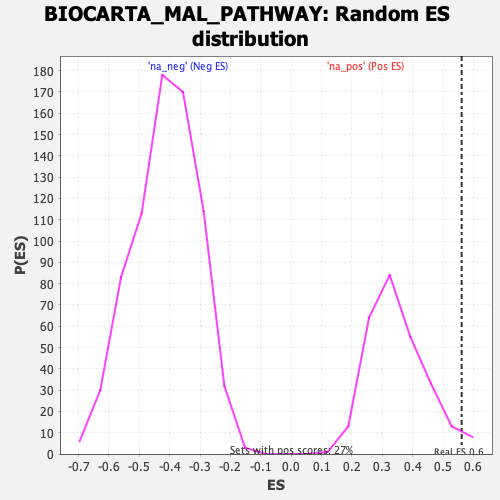

| | | Dataset | DE_genes2 |
| Phenotype | NoPhenotypeAvailable |
| Upregulated in class | na_pos |
| GeneSet | BIOCARTA_MAL_PATHWAY |
| Enrichment Score (ES) | 0.56135887 |
| Normalized Enrichment Score (NES) | 1.6084162 |
| Nominal p-value | 0.029520296 |
| FDR q-value | 0.19287223 |
| FWER p-Value | 0.909 |
Table: GSEA Results Summary
 Fig 1: Enrichment plot: BIOCARTA_MAL_PATHWAY
Fig 1: Enrichment plot: BIOCARTA_MAL_PATHWAY
Profile of the Running ES Score & Positions of GeneSet Members on the Rank Ordered List
| PROBE | GENE SYMBOL | GENE_TITLE | RANK IN GENE LIST | RANK METRIC SCORE | RUNNING ES | CORE ENRICHMENT | | 1 | MAP2K2 | | | 148 | 5.470 | 0.1166 | Yes |
| 2 | RHOA | | | 194 | 5.113 | 0.2312 | Yes |
| 3 | MAPK3 | | | 484 | 3.743 | 0.2996 | Yes |
| 4 | MAP4K2 | | | 519 | 3.662 | 0.3816 | Yes |
| 5 | ACTA1 | | | 614 | 3.374 | 0.4533 | Yes |
| 6 | RAC1 | | | 938 | 2.812 | 0.4983 | Yes |
| 7 | CDC42 | | | 954 | 2.787 | 0.5614 | Yes |
| 8 | LIMK1 | | | 2048 | 1.722 | 0.5347 | No |
| 9 | DIAPH1 | | | 3727 | 0.921 | 0.4542 | No |
| 10 | RAF1 | | | 4886 | 0.597 | 0.3978 | No |
| 11 | MAL | | | 6188 | 0.307 | 0.3260 | No |
| 12 | SRF | | | 7529 | 0.060 | 0.2463 | No |
| 13 | MAP3K1 | | | 7905 | 0.004 | 0.2236 | No |
| 14 | MAPK1 | | | 9065 | -0.206 | 0.1582 | No |
| 15 | MAP2K1 | | | 11781 | -1.121 | 0.0195 | No |
| 16 | HNF1A | | | 12499 | -1.475 | 0.0099 | No |
| 17 | HRAS | | | 14020 | -2.508 | -0.0246 | No |
| 18 | MAPK8 | | | 14079 | -2.579 | 0.0311 | No |
| 19 | ROCK1 | | | 15795 | -5.112 | 0.0446 | No |
Table: GSEA details [plain text format]

Fig 2: BIOCARTA_MAL_PATHWAY: Random ES distribution
Gene set null distribution of ES for BIOCARTA_MAL_PATHWAY